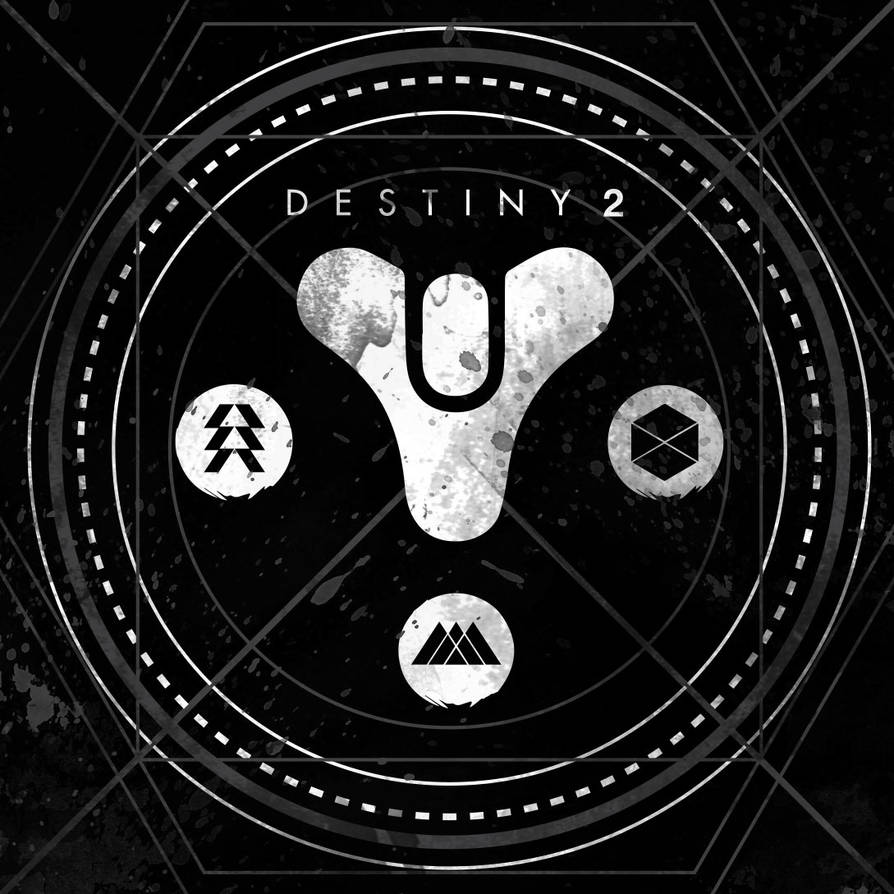

Destiny 2 is a Shooter-Looter MMO, with a focus on fun gunplay and using abilities like you're in a fantasy game.
 Hello! This website is going to help players with some experience in Destiny 2 become able to challenge themselves with end-game content without having to work very hard. Endgame content is intimidating because of the power level of the enemies you face and the difficulty of staying alive. Nothing is more punishing in Destiny than Grandmaster Nightfalls and Master-level Dungeons and Raids. If you're unfamiliar with the story of Destiny 2, click here to learn the lore!
Titan Class recommended armor and subclasses
- Synthoceps exotic arms armor (Strand and solar subclass)
- Heart of Inmost Light exotic chest armor (Arc subclass)
- Pyrogale Gauntlets exotic arms armor (Solar subclass)
Hunter Class recommended armor and subclasses
- Orpheus Rig exotic leg armor (Void subclass)
- Foetracer exotic helmet armor (Any subclass)
- Celestial Nighthawk exotic helmet armor(Solar subclass)
Warlock Class recommended armor and subclasses
- Sunbracers exotic arms armor (Solar subclass)
- Dawn Chorus exotic helmet armor (Solar subclass)
- Lunafaction Boots exotic leg armor (Solar subclass)